Change analysis for Namibia for PRIMAP-hist v2.5.1_final compared to
v2.5_final
Overview over
emissions by sector and gas
The following figures show the aggregate national total emissions
excluding LULUCF AR6GWP100 for the country reported priority scenario.
The dotted linesshow the v2.5_final data.
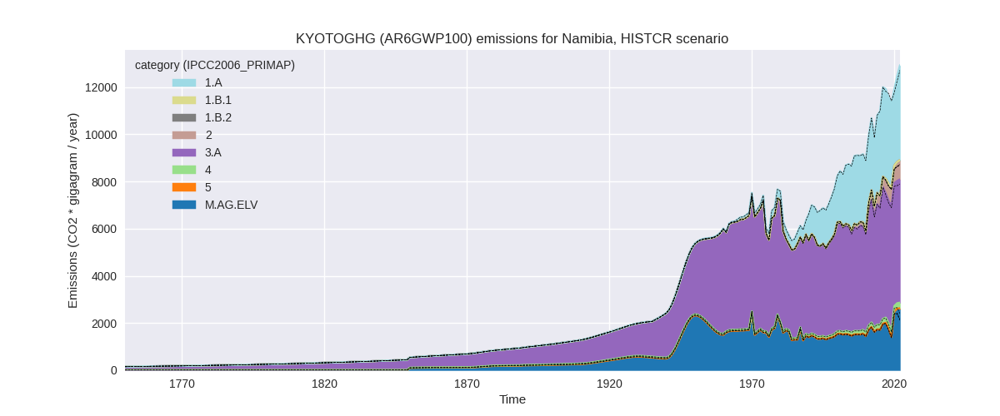
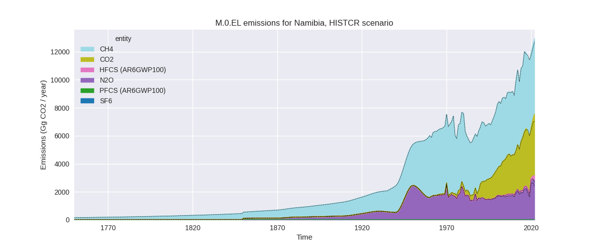
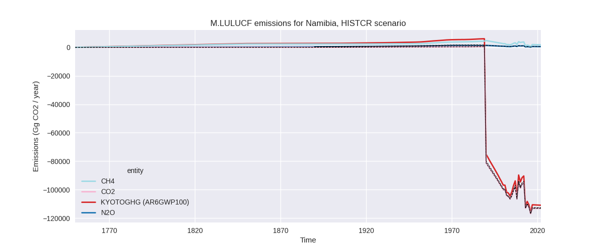
The following figures show the aggregate national total emissions
excluding LULUCF AR6GWP100 for the third party priority scenario. The
dotted linesshow the v2.5_final data.
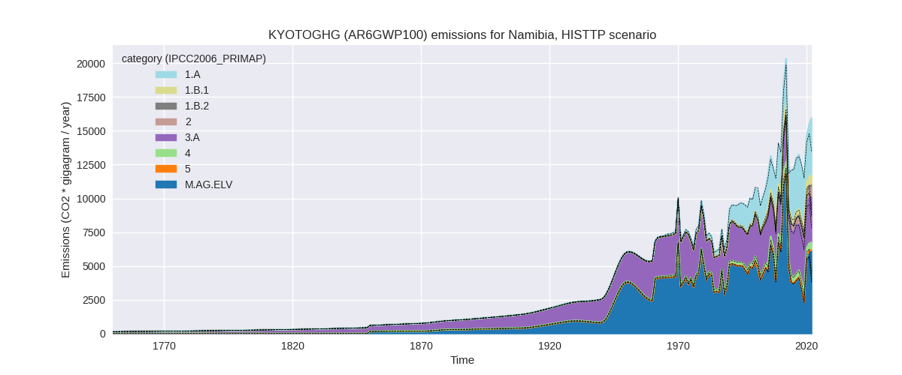
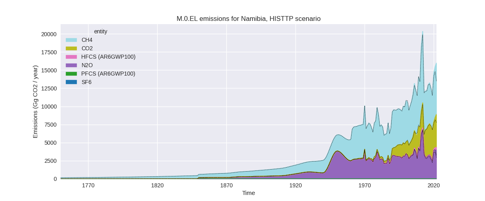
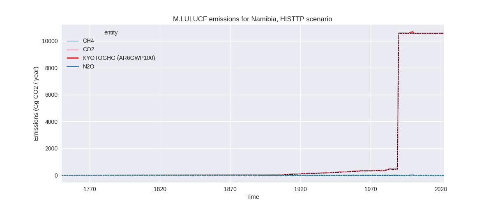
Overview over changes
In the country reported priority scenario we have the following
changes for aggregate Kyoto GHG and national total emissions excluding
LULUCF (M.0.EL):
- Emissions in 2022 have changed by 1.7%% (212.78 Gg CO2 / year)
- Emissions in 1990-2022 have changed by 0.1%% (12.46 Gg CO2 / year)
In the third party priority scenario we have the following changes
for aggregate Kyoto GHG and national total emissions excluding LULUCF
(M.0.EL):
- Emissions in 2022 have changed by 19.1%% (2566.37 Gg CO2 / year)
- Emissions in 1990-2022 have changed by 1.1%% (125.85 Gg CO2 / year)
Most
important changes per scenario and time frame
In the country reported priority scenario the
following sector-gas combinations have the highest absolute impact on
national total KyotoGHG (AR6GWP100) emissions in 2022
(top 5):
- 1: M.AG.ELV, N2O with 477.10 Gg CO2 / year (22.6%)
- 2: 3.A, CH4 with -273.51 Gg CO2 / year (-5.1%)
- 3: 1.A, CO2 with 22.17 Gg CO2 / year (0.6%)
- 4: 4, CH4 with -8.29 Gg CO2 / year (-3.8%)
- 5: 1.A, CH4 with -6.46 Gg CO2 / year (-6.7%)
In the country reported priority scenario the
following sector-gas combinations have the highest absolute impact on
national total KyotoGHG (AR6GWP100) emissions in
1990-2022 (top 5):
- 1: M.AG.ELV, N2O with 25.77 Gg CO2 / year (1.6%)
- 2: 1.A, CO2 with -8.48 Gg CO2 / year (-0.3%)
- 3: 3.A, CH4 with -2.39 Gg CO2 / year (-0.1%)
- 4: 1.A, CH4 with -1.31 Gg CO2 / year (-1.7%)
- 5: 3.A, N2O with -0.86 Gg CO2 / year (-0.8%)
In the third party priority scenario the following
sector-gas combinations have the highest absolute impact on national
total KyotoGHG (AR6GWP100) emissions in 2022 (top
5):
- 1: M.AG.ELV, CH4 with 1348.73 Gg CO2 / year (126.1%)
- 2: M.AG.ELV, N2O with 1097.07 Gg CO2 / year (41.4%)
- 3: 1.B.1, CH4 with 193.44 Gg CO2 / year (35.4%)
- 4: 3.A, CH4 with -104.17 Gg CO2 / year (-3.0%)
- 5: 1.A, CO2 with 57.88 Gg CO2 / year (1.5%)
In the third party priority scenario the following
sector-gas combinations have the highest absolute impact on national
total KyotoGHG (AR6GWP100) emissions in 1990-2022 (top
5):
- 1: M.AG.ELV, CH4 with 77.27 Gg CO2 / year (4.0%)
- 2: M.AG.ELV, N2O with 71.76 Gg CO2 / year (2.2%)
- 3: 1.A, CO2 with -40.17 Gg CO2 / year (-1.6%)
- 4: 1.B.1, CH4 with 18.56 Gg CO2 / year (6.4%)
- 5: 2, CO2 with -1.17 Gg CO2 / year (-0.7%)
Notes on data changes
Here we list notes explaining important emissions changes for the
country. ’' means that the following text only applies to the TP time
series, while means that it only applies to the CR scenario. Otherwise
the note applies to both scenarios.
- M.AG.ELV, CH4: /TP/ 2022 emissions are much higher
as extrapolated data which also took into account the emissions peak and
decline of 2011-2019 have been replaced by EDGAR 8.0 growth rates.
- M.AG.ELV, N2O: 2022 emissions are much higher as
extrapolated data which also took into account the emissions peak and
decline of 2011-2019 have been replaced by EDGAR 8.0 growth rates.
- 3.A, CH4: 2022 emissions are lower as extrapolated
data have been replaced with EDGAR growth rates.
- 1.B.1, CH4: EDGAR 8.0 data are higher than EDGAR
7.0 starting in 2019 leading to much higher 2022 emissions and higher
cumulative emissions.
Changes by sector and gas
For each scenario and time frame the changes are displayed for all
individual sectors and all individual gases. In the sector plot we use
aggregate Kyoto GHGs in AR6GWP100. In the gas plot we usenational total
emissions without LULUCF. ## country reported scenario
2022
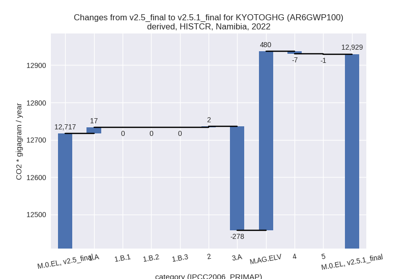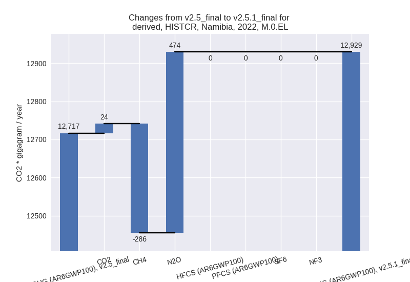
1990-2022
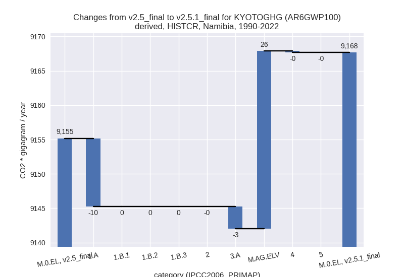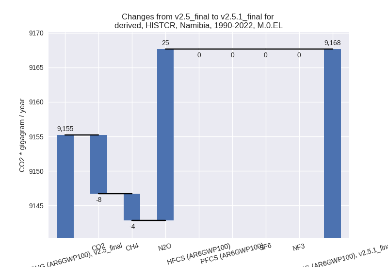
third party scenario
2022
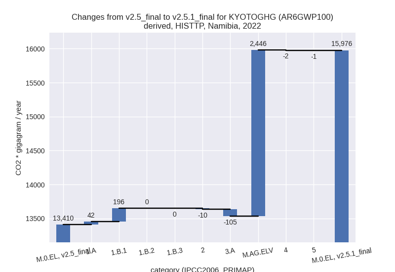
1990-2022
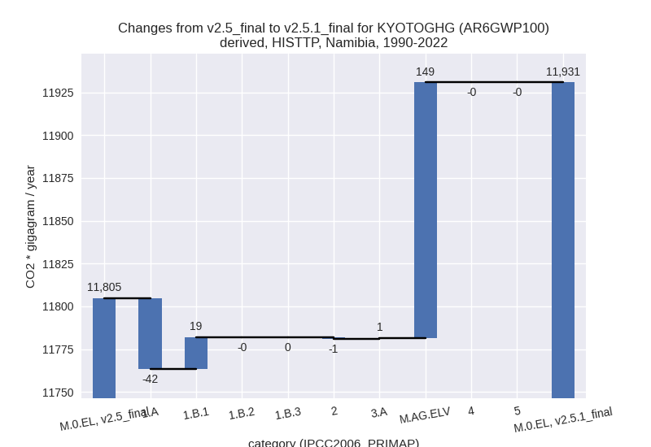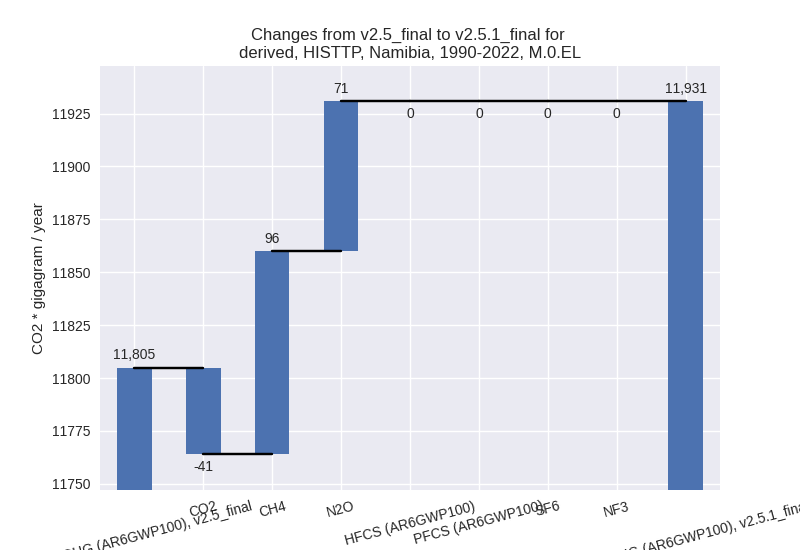
Detailed changes for the
scenarios:
country reported scenario
(HISTCR):
Most important changes
per time frame
For 2022 the following sector-gas combinations have
the highest absolute impact on national total KyotoGHG (AR6GWP100)
emissions in 2022 (top 5):
- 1: M.AG.ELV, N2O with 477.10 Gg CO2 / year (22.6%)
- 2: 3.A, CH4 with -273.51 Gg CO2 / year (-5.1%)
- 3: 1.A, CO2 with 22.17 Gg CO2 / year (0.6%)
- 4: 4, CH4 with -8.29 Gg CO2 / year (-3.8%)
- 5: 1.A, CH4 with -6.46 Gg CO2 / year (-6.7%)
For 1990-2022 the following sector-gas combinations
have the highest absolute impact on national total KyotoGHG (AR6GWP100)
emissions in 1990-2022 (top 5):
- 1: M.AG.ELV, N2O with 25.77 Gg CO2 / year (1.6%)
- 2: 1.A, CO2 with -8.48 Gg CO2 / year (-0.3%)
- 3: 3.A, CH4 with -2.39 Gg CO2 / year (-0.1%)
- 4: 1.A, CH4 with -1.31 Gg CO2 / year (-1.7%)
- 5: 3.A, N2O with -0.86 Gg CO2 / year (-0.8%)
Changes in the main sectors for aggregate KyotoGHG (AR6GWP100)
are
- 1: Total sectoral emissions in 2022 are 4018.90 Gg
CO2 / year which is 31.1% of M.0.EL emissions. 2022 Emissions have
changed by 0.4% (16.84 Gg CO2 /
year). 1990-2022 Emissions have changed by -0.4% (-9.91 Gg CO2 / year).
- 2: Total sectoral emissions in 2022 are 820.90 Gg
CO2 / year which is 6.3% of M.0.EL emissions. 2022 Emissions have
changed by 0.3% (2.23 Gg CO2 /
year). 1990-2022 Emissions have changed by -0.0% (-0.01 Gg CO2 / year).
- M.AG: Total sectoral emissions in 2022 are 7816.94
Gg CO2 / year which is 60.5% of M.0.EL emissions. 2022 Emissions have
changed by 2.6% (201.34 Gg CO2 /
year). 1990-2022 Emissions have changed by 0.4% (22.62 Gg CO2 / year). For 2022 the
changes per gas
are:
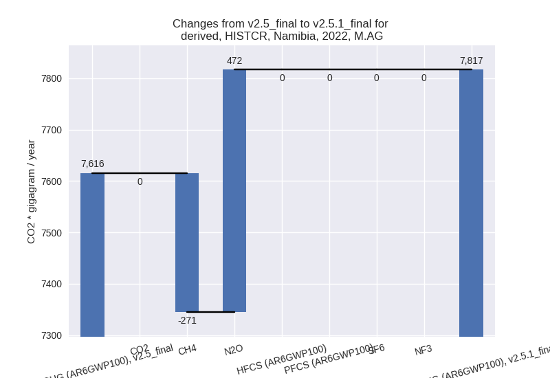
The changes come from the following subsectors:
- 3.A: Total sectoral emissions in 2022 are 5223.51
Gg CO2 / year which is 66.8% of category M.AG emissions. 2022 Emissions
have changed by -5.1% (-278.30 Gg
CO2 / year). 1990-2022 Emissions have changed by -0.1% (-3.25 Gg CO2 / year). For 2022 the
changes per gas
are:
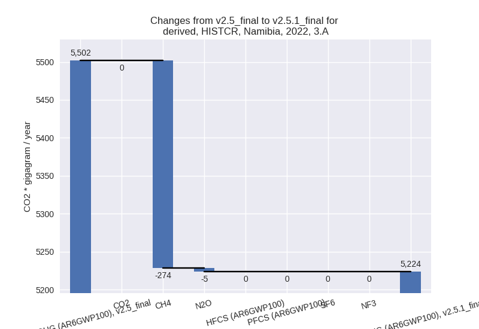
There is no subsector information available in PRIMAP-hist.
- M.AG.ELV: Total sectoral emissions in 2022 are
2593.42 Gg CO2 / year which is 33.2% of category M.AG emissions. 2022
Emissions have changed by 22.7%
(479.64 Gg CO2 / year). 1990-2022 Emissions have changed by 1.6% (25.86 Gg CO2 / year). For 2022 the
changes per gas
are:
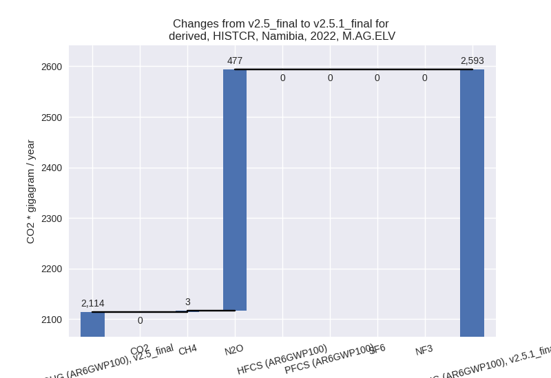
There is no subsector information available in PRIMAP-hist.
- 4: Total sectoral emissions in 2022 are 236.89 Gg
CO2 / year which is 1.8% of M.0.EL emissions. 2022 Emissions have
changed by -2.9% (-7.00 Gg CO2 /
year). 1990-2022 Emissions have changed by -0.1% (-0.21 Gg CO2 / year). For 2022 the
changes per gas
are:
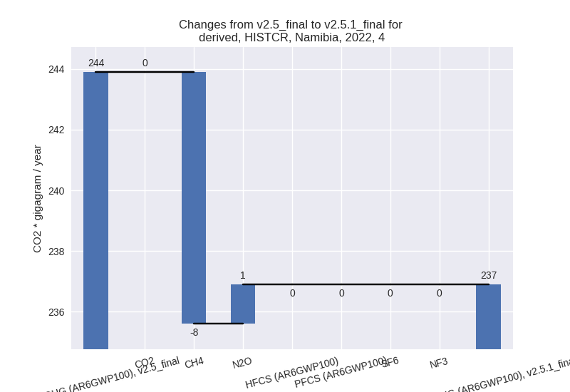
- 5: Total sectoral emissions in 2022 are 35.66 Gg
CO2 / year which is 0.3% of M.0.EL emissions. 2022 Emissions have
changed by -1.7% (-0.62 Gg CO2 /
year). 1990-2022 Emissions have changed by -0.1% (-0.02 Gg CO2 / year).
third party scenario (HISTTP):
Most important changes
per time frame
For 2022 the following sector-gas combinations have
the highest absolute impact on national total KyotoGHG (AR6GWP100)
emissions in 2022 (top 5):
- 1: M.AG.ELV, CH4 with 1348.73 Gg CO2 / year (126.1%)
- 2: M.AG.ELV, N2O with 1097.07 Gg CO2 / year (41.4%)
- 3: 1.B.1, CH4 with 193.44 Gg CO2 / year (35.4%)
- 4: 3.A, CH4 with -104.17 Gg CO2 / year (-3.0%)
- 5: 1.A, CO2 with 57.88 Gg CO2 / year (1.5%)
For 1990-2022 the following sector-gas combinations
have the highest absolute impact on national total KyotoGHG (AR6GWP100)
emissions in 1990-2022 (top 5):
- 1: M.AG.ELV, CH4 with 77.27 Gg CO2 / year (4.0%)
- 2: M.AG.ELV, N2O with 71.76 Gg CO2 / year (2.2%)
- 3: 1.A, CO2 with -40.17 Gg CO2 / year (-1.6%)
- 4: 1.B.1, CH4 with 18.56 Gg CO2 / year (6.4%)
- 5: 2, CO2 with -1.17 Gg CO2 / year (-0.7%)
Changes in the main sectors for aggregate KyotoGHG (AR6GWP100)
are
- 1: Total sectoral emissions in 2022 are 4989.18 Gg
CO2 / year which is 31.2% of M.0.EL emissions. 2022 Emissions have
changed by 5.0% (238.36 Gg CO2 /
year). 1990-2022 Emissions have changed by -0.8% (-22.84 Gg CO2 / year). For 2022 the
changes per gas
are:
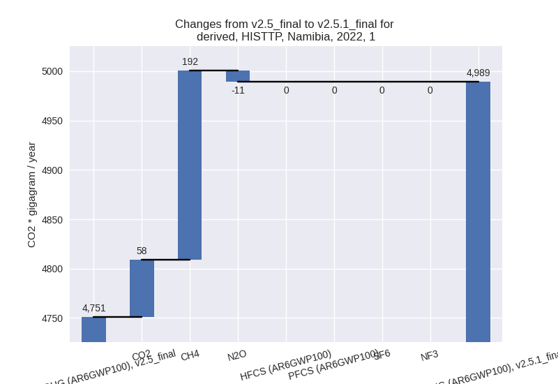
The changes come from the following subsectors:
- 1.A: Total sectoral emissions in 2022 are 4240.21
Gg CO2 / year which is 85.0% of category 1 emissions. 2022 Emissions
have changed by 1.0% (42.35 Gg CO2 /
year). 1990-2022 Emissions have changed by -1.6% (-41.65 Gg CO2 / year).
- 1.B.1: Total sectoral emissions in 2022 are 748.96
Gg CO2 / year which is 15.0% of category 1 emissions. 2022 Emissions
have changed by 35.4% (196.01 Gg CO2
/ year). 1990-2022 Emissions have changed by 6.4% (18.80 Gg CO2 / year). For 2022 the
changes per gas
are:
For 1990-2022 the changes per gas
are:
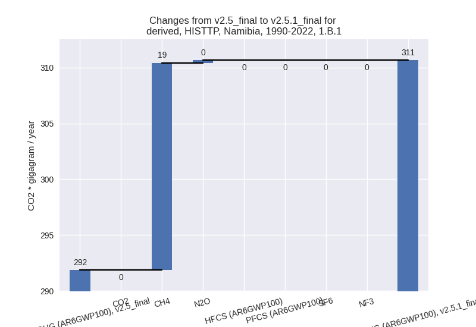
There is no subsector information available in PRIMAP-hist.
- 1.B.2: Total sectoral emissions in 2022 are 0.01 Gg
CO2 / year which is 0.0% of category 1 emissions. 2022 Emissions have
changed by 6.9% (0.00 Gg CO2 /
year). 1990-2022 Emissions have changed by -3.8% (-0.00 Gg CO2 / year). For 2022 the
changes per gas
are:
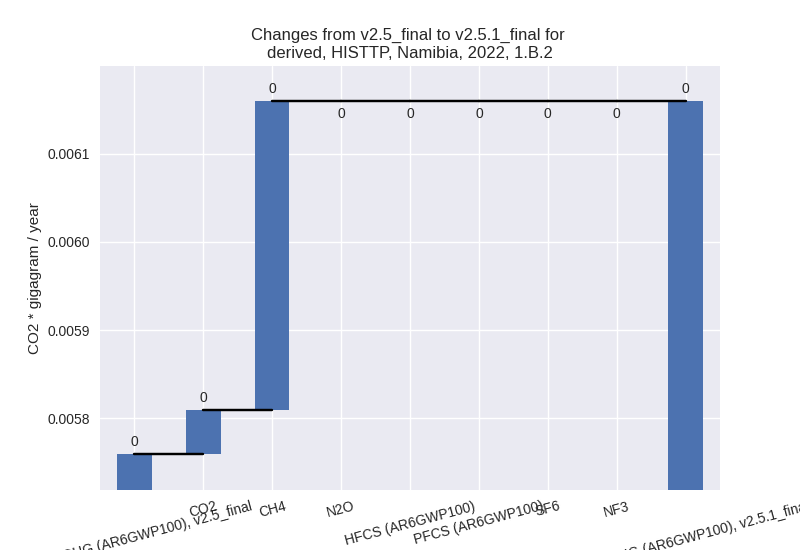
For 1990-2022 the changes per gas
are:
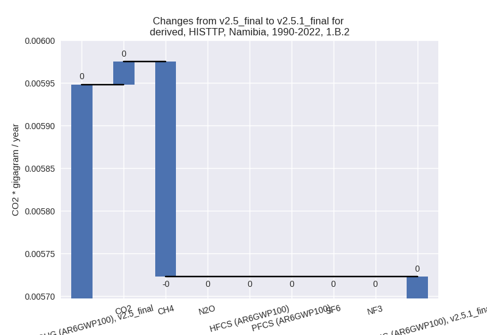
There is no subsector information available in PRIMAP-hist.
- 2: Total sectoral emissions in 2022 are 875.55 Gg
CO2 / year which is 5.5% of M.0.EL emissions. 2022 Emissions have
changed by -1.1% (-9.89 Gg CO2 /
year). 1990-2022 Emissions have changed by -0.4% (-1.17 Gg CO2 / year).
- M.AG: Total sectoral emissions in 2022 are 9515.59
Gg CO2 / year which is 59.6% of M.0.EL emissions. 2022 Emissions have
changed by 32.6% (2340.41 Gg CO2 /
year). 1990-2022 Emissions have changed by 1.8% (149.94 Gg CO2 / year). For 2022 the
changes per gas
are:
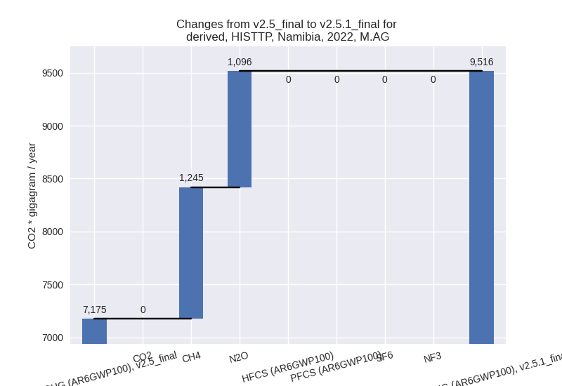
The changes come from the following subsectors:
- 3.A: Total sectoral emissions in 2022 are 3348.72
Gg CO2 / year which is 35.2% of category M.AG emissions. 2022 Emissions
have changed by -3.1% (-105.43 Gg
CO2 / year). 1990-2022 Emissions have changed by 0.0% (0.52 Gg CO2 / year). For 2022 the
changes per gas
are:
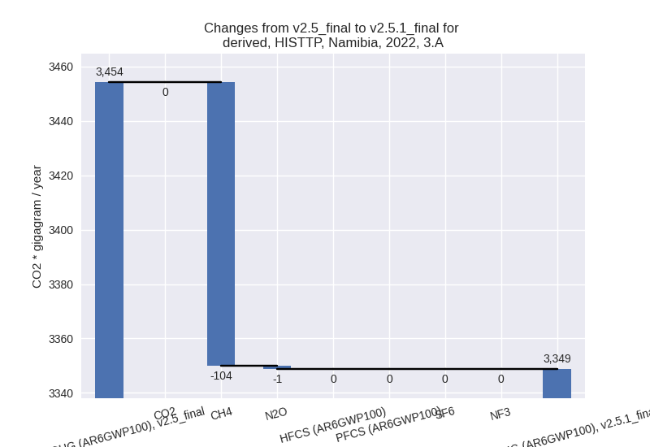
There is no subsector information available in PRIMAP-hist.
- M.AG.ELV: Total sectoral emissions in 2022 are
6166.87 Gg CO2 / year which is 64.8% of category M.AG emissions. 2022
Emissions have changed by 65.7%
(2445.84 Gg CO2 / year). 1990-2022 Emissions have changed by 2.9% (149.42 Gg CO2 / year). For 2022 the
changes per gas
are:
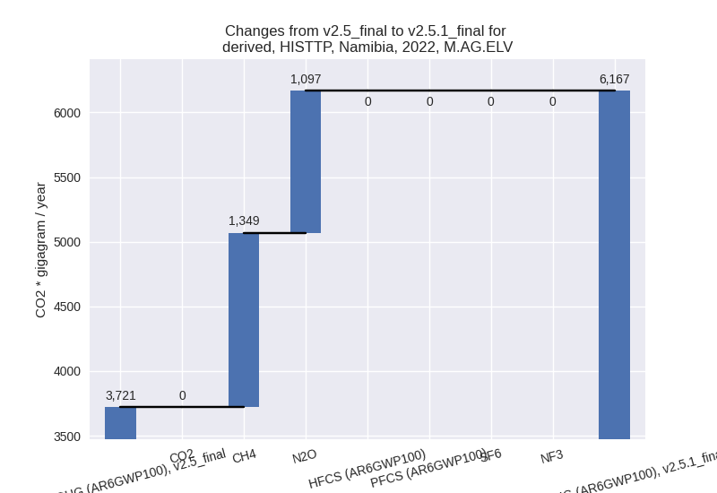
For 1990-2022 the changes per gas
are:
There is no subsector information available in PRIMAP-hist.
- 4: Total sectoral emissions in 2022 are 560.13 Gg
CO2 / year which is 3.5% of M.0.EL emissions. 2022 Emissions have
changed by -0.3% (-1.88 Gg CO2 /
year). 1990-2022 Emissions have changed by -0.0% (-0.06 Gg CO2 / year).
- 5: Total sectoral emissions in 2022 are 35.66 Gg
CO2 / year which is 0.2% of M.0.EL emissions. 2022 Emissions have
changed by -1.7% (-0.62 Gg CO2 /
year). 1990-2022 Emissions have changed by -0.1% (-0.02 Gg CO2 / year).